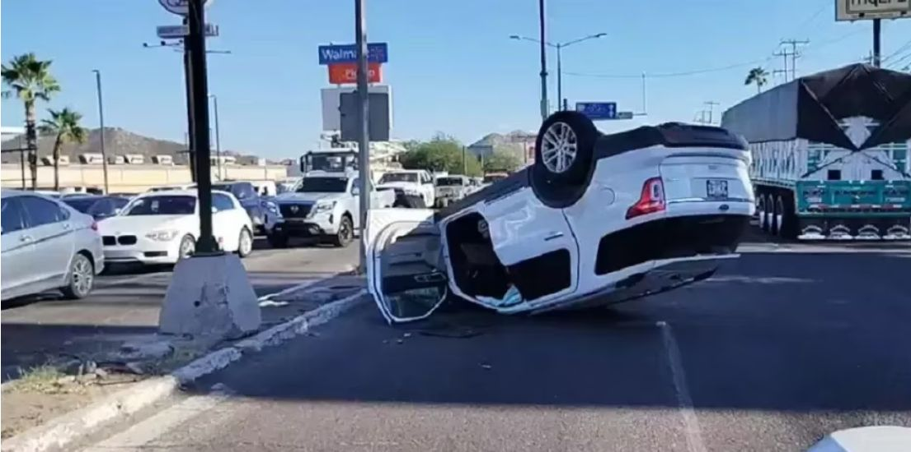

Los accidentes de tránsito siguen siendo una de las principales causas de muerte en la ciudad de Hermosillo. Durante los últimos años, el número de accidentes ha ido en aumento debido a factores como el exceso de velocidad, el uso del celular al conducir y la falta de precaución en los cruces más transitados.
Según el informe oficial de la Policía Municipal, en lo que va del año se han registrado más de 1,639 accidentes, con un aumento significativo en los meses de mayor tráfico. En comparación con el año anterior, la cantidad de víctimas fatales ha disminuido, pero sigue siendo una preocupación constante para las autoridades.
Para reducir los accidentes, sigue estas recomendaciones:
Algunas de las calles menos seguras para transitar en Hermosillo:
El tráfico en estas zonas es elevado, por lo que se recomienda extremar precauciones y respetar los señalamientos de tránsito.
Mantén la calma: Respira profundo y evalúa la situación antes de actuar.
Verifica si hay heridos: Si hay personas lesionadas, llama inmediatamente al 911 y proporciona información clara sobre el accidente.
Asegura el área: Si el choque es menor, mueve los vehículos a un lugar seguro para evitar bloquear el tráfico.
Llama a las autoridades: La policía tomará el reporte y determinará la responsabilidad.
Intercambia información: Nombre, dirección, teléfono, número de placa, aseguradora y toma fotos del accidente.
No admitas culpa: Espera a que las autoridades realicen su investigación antes de asumir responsabilidad.
Reporta el accidente a tu aseguradora: Contacta a tu aseguradora lo antes posible para iniciar el proceso de reclamación.
Si has visto un accidente en alguna calle de Hermosillo, ayúdanos a reportarlo.